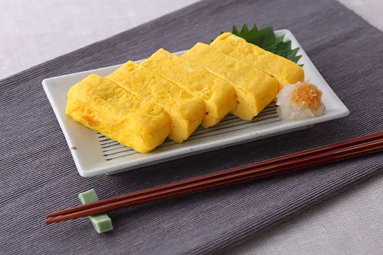

Japanesed rolled omelette is a classic dish for everyday meals and bento boxes.

Ingredients
・3 eggs
・1 tablespoon of soy sauce
・1 tablespoon of sugar
・3 tablespoons of dashi (broth)
・ 1 teaspoon of mirin
・ 1 oinch of salt
・ Adequate amount of cooking oil
Directions
1. Beat the eggs lightly wuth chopsticks. Add soy sauce, sugar, dashi, mirin, and salt, then whisk gently.
2. Heat the pan over a medium high heat. Put in the oil to cover the entire pan. Wait until the pan is well heated. Check if it is hot by dropping the egg mixture in the pan with the end of chopstick.
3. After checking, pour a thin layer of the egg mixture into the pan and spread evenly. When the egg white begins to set, start rolling the egg mixture from the back towards you using the chopsticks. After making the roll, slide it back and put oil in the exposed part of the pan.
4. Pour the egg mixture into the exposed part of the pan. Lift the previously rolled omelet to spread the egg mixture underneath it. Once again, when the egg mixture starts to set, rool it from the back towards you and then slide it back. Repeat the procedure again and again. After putting the egg mixture several times, Brown the surface slightly to your preference.